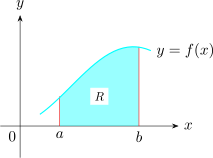
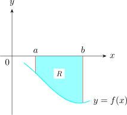
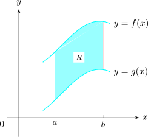
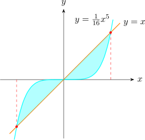
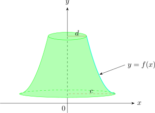
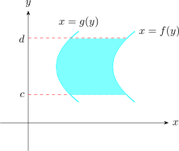
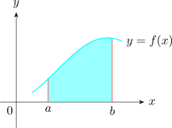
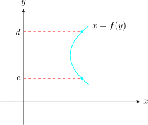

3.10 Applications of Definite Integrals
3.10.1 Area Under the Curve
- 1.
- If \(f(x)\) is continuous and non-negative on the interval \([a,b]\), then the are of the region \(R\) between
the curve and \(x-\)axis is given by
\[A = \int ^b_a f(x) dx\]

- 2.
- If \(f(x)\) is continuous and negative on the interval \([a,b]\), then the area between the curve and the \(x-\)axis is
given by
\[A = - \int ^b_a f(x) dx = \int ^a_b f(x) dx\]

3.10.2 Area Between Two Curves
If \(f(x)\) and \(g(x)\) are continuous on the interval \([a,b]\) such that \(0 \leq g(x) \leq f(x)\) for \(a\leq x \leq b\), then the area \(A\) of the region \(R\) between the curves \(y = f(x)\) and \(y = g(x)\) from \(x = a\) to \(x = b\) is given by \[A = \int ^b_a f(x) dx - \int ^b_a g(x) dx\]
\[\text {i.e}\hspace {0.4cm} A = \int ^b_a \Big [f(x) - g(x)\Big ] dx\]

Find the area of the region bounded by the curves \(\hspace {0.2cm} y = x\hspace {0.2cm}\) and \(\hspace {0.2cm} y = \dfrac {x^5}{16}\)
Solution.

\(x = \dfrac {x^5}{16}\hspace {0.5cm}\implies \hspace {0.5cm} x - \dfrac {x^5}{16} = 0\hspace {1cm} \implies \hspace {1cm} x\Big (1 - \dfrac {x^4}{16}\Big ) = 0\)
\(\implies \hspace {0.4cm} x = 0 \hspace {0.2cm}\) or \(\hspace {0.2cm} 1 - \dfrac {x^4}{16} = 0 \hspace {0.5cm} \implies \hspace {0.5cm} \Big (1 - \dfrac {x^2}{4}\Big )\Big ( 1 + \dfrac {x^2}{4}\Big ) = 0\hspace {0.3cm}\) but \(1 + \dfrac {x^2}{4} \neq 0\)
\(\implies \hspace {0.5cm} \Big (1 - \dfrac {x}{2}\Big )\Big (1+ \dfrac {x}{2}\Big ) = 0\)
\(\implies \hspace {0.5cm} x = -2,2\)
\begin {align*} A & = \int ^0_{-2} \Bigg (\dfrac {x^5}{16} - x\Bigg ) dx + \int ^2_0 \Bigg ( x - \dfrac {x^5}{16}\Bigg ) dx\\\\ & = \Bigg (\dfrac {x^6}{96} - \dfrac {x^2}{2}\Bigg |^0_{-2} + \Bigg (\dfrac {x^2}{2} - \dfrac {x^6}{96}\Bigg |^2_0\\\\ & = -\dfrac {64}{96} + \dfrac {4}{2} + \dfrac {4}{2} - \dfrac {64}{96}\\ & = \dfrac {8}{3}\hspace {0.2cm}\text {Squared Units}\\\\ \end {align*}
3.10.3 Volume of the Solid of Revolution
When the region below the curve \(y = f(x)\) between \(x = a\) and \(x = b\) is rotated about the \(x-\)axis the solid generated is called the solid of revolution and its value is called the volume of revolution.
\begin {align*} V & \approx \sum ^n_{i= 1} \pi \Big [f\big (X_j\big )\Big ]^2\Delta X\\\\ \implies \hspace {1cm} V &= \lim \limits _{\Delta X \rightarrow 0} \sum ^{\infty }_{i = 1} \pi \Big [f(x)\Big ]^2 \Delta X = \pi \int ^b_a \Big [f(x)\Big ]^2 dx \end {align*}
Therefore, the volume of the solid of revolution is given by \[V = \pi \int ^b_a \Big [f(x)\Big ]^2\hspace {0.1cm} dx\] when the region between the curve and the \(y-\)axis from \(y = c\) to \(y=d\) is rotated about the \(y-\)axis, the volume of revolution is given by \[V = \pi \int ^d_c x^2\hspace {0.1cm} dy\hspace {0.4cm},\hspace {0.2cm} x = g(y)\]

Find the volume of revolution generated by rotating the region bounded by the hyperbola \(x^2 - y^2 = 1\), the lines \(y = -2\) and \(y = 2\) about the \(y-\)axis.
Solution. \begin {align*} V & = \int ^d_c x^2\hspace {0.1cm}dy = \pi \int ^2{-2} \Big (1 + y^2)dy\\ & = \pi \Bigg ( y + \dfrac {y^3}{3}\Bigg |^2_{-2}\\ & = \dfrac {28}{3}\pi \hspace {0.2cm}\text {cubic units}\\\\ \end {align*}
Washer Method
This method is useful when the axis of rotation is not part of the boundary of the plane
area.
If the axis of rotation is the \(x-\)axis, the upper boundary of the plane area is given by \(y = f(x)\), and the region
runs from \(x = a\) to \(x = b\), then Volume \(V\) of the solid of revolution is given by
\[V = \pi \int ^b_a \Big \{ \Big [f(x)\Big ]^2 - \Big [g(x)\Big ]^2\Big \} dx\]
Similarly, if the axis of rotation is the \(y-\)axis, and the plane area is bounded the right by \(x = f(y)\), to the left by \(x = g(y)\) above by \(y = c\) and below by \(y = d\), the volume \(V\) of the solid of revolution is given by \[V = \pi \int ^d_c \Big \{ \Big [f(y)\Big ]^2 - \Big [g(y)\Big ]^2\Big \} dy\]

Shell Method
If the axis of rotation is the \(y-\)axis and the plane are in the first quadrant is bounded below by the \(x-\)axis above by \(y = f(x)\), to the left by \(x = a\) and the right by \(x = b\) then volume \(V\) of the solid of revolution is given by \[V = 2\pi \int ^b_a xy\hspace {0.1cm} dx = 2\pi \int ^b_a xf(x) \hspace {0.1cm} dx\]

Similarly, if the axis of rotation is the \(x-\)axis and the plane area in the first quadrant is bounded to the left by the \(y-\)axis, to the right by \(x = f(y)\) below by \(y = c\) and above by \(y = d\) then the Volume \(V\) of the solid of revolution is given by \[V = 2\pi \int ^d_c xy\hspace {0.1cm} dy = 2\pi \int ^d_c yf(y) \hspace {0.1cm} dy\]

Questions on this section
Stuck on something here? Ask below and it stays attached to this topic.